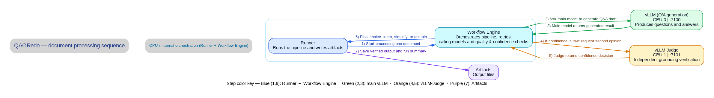

Browser-friendly version of the 7-step sequence diagram.

QAGREDO_PROFILE=vllm (default, dual GPU),
ollama (host Ollama), or kubeflow (in-container Ollama).
Config files: config/config.ollama.yaml,
config.kubeflow.yaml, config.vllm.yaml.
bash run.sh -- --resume skips documents that already have
*_analysis.json and reuses the latest run folder under
output/.
bash run.sh --minimise writes per-document split files;
--minimise-good / --minimise-bad are split-only
shortcuts
*_analysis_minimal_good_pairs.json and
*_analysis_minimal_bad_pairs.json.
qagredo_bundle.tar.gz and qagredo-v1.tar aligned with requirements.txt. After docker load, run bash verify_offline_deployment.sh in qagredo_host/. Details: docs/OFFLINE_SETUP_GUIDE.md.